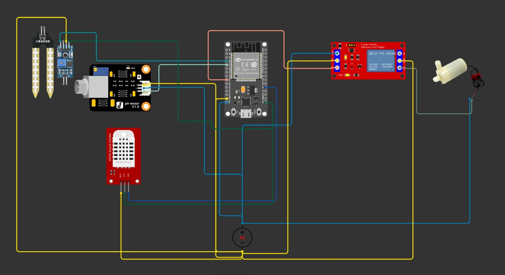

Microcontroladores do Vaso
- ESP32-WROOM-32 (v2.1.0 — Em bancada): Lê os sensores DHT22 e YL-69 (pH simulado conforme ADR-024), aciona a bomba via módulo relé de 2 canais (ativo em nível baixo, com diodo 1N4007), publica via MQTT/TLS no EMQX Cloud, configura Wi-Fi via BLE e recebe atualizações remotas via OTA com rollback automático.
- Seeed Studio XIAO ESP32-S3 (Em desenvolvimento): Responsável pela interação por voz — microfone INMP441 (I2S), amplificador MAX98357 (I2S), Display OLED SSD1306 (I2C) e ativação local por voz ("Hi ESP" via ESP-SR), comunicando-se via HTTPS com o backend e UART com o WROOM.
Circuito Eletrônico e Pinagem (ESP32-WROOM)

| Função | GPIO (WROOM) | Observação |
|---|---|---|
| Relé da bomba (IN2) | GPIO 23 | Ativo em nível baixo; fonte externa 5 V + diodo 1N4007 |
| DHT22 (Temp. e umidade do ar) | GPIO 27 | Leitura descartada se falhar |
| YL-69 (Umidade do solo) | GPIO 33 | ADC1 (média de 16 leituras calibradas em %) |
| Sensor de pH | GPIO 34 | Reservado no ADC1 (simulado entre 6,0 e 7,0 na V1) |
| UART com ESP32-S3 | GPIO 17 / 16 | TX / RX reservados para comunicação entre placas |
Contratos MQTT, BLE e OTA
Leituras (greensync/{deviceId}/sensores, a cada 30 s):
{
"ph": 6.4,
"umidade_solo": 42,
"temperatura_ar": 24.1,
"umidade_ar": 58,
"bomba_ligada": false,
"timestamp": 1735000000
}- Status (
greensync/{deviceId}/status): Publica{"status": "online", "fw": "2.1.0"}com retain ao conectar e registra{"status": "offline"}como Last Will. - Comandos (
greensync/{deviceId}/comandos, QoS 1): Aceitaregar(limite de segurança de 15 s e deduplicação porid),atualizarereverter. - Provisionamento BLE: Abre como
GreenSync_BLEquando sem rede salva ou após 4 falhas; só grava as credenciais na NVS após conexão bem-sucedida. - OTA Seguro: Baixa
.binapenas por HTTPS degithub.com, valida SHA-256, recusa atualizar com a bomba ligada e faz rollback automático se não confirmar conexão MQTT em até 5 minutos.